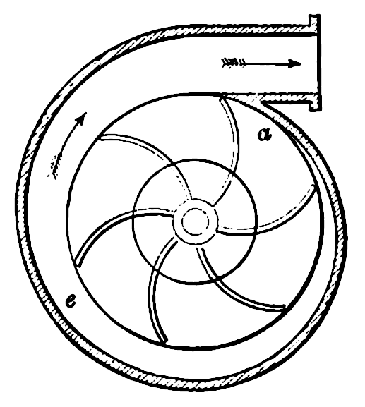

Imagine, before you, two doors lie in wait, anticipating your choice. One, simple and familiar, but adorned by an admonishment to use the other. Imagine you do not know how your choice may affect the world. Is the revolving door an entertaining carousel offering an easy option to save energy or a rotary menace? Every day, this conundrum faces literally some people, maybe more.
The sign may claim it, but is it true? Do revolving doors really save energy?
Reviewing the research, you might be surprised to find that no one has yet set up a simple, comprehensible experiment to show the difference. A reasonable person might wonder, when it would be so easy to do, why has nobody tested the two door types, door to door?
For those who struggle with the conflict between love of convenience and duties to sign obedience, this site is here to do that test.
The 1938 Heating Ventilation and Air Conditioning Guide suggests:
Infiltration rate through swinging and revolving doors is generally a matter of judgment... in the absence of adequate research... revolving doors may be assumed 60 per cent of swinging door values.
That revolving door estimate probably came from Arthur Simpson, sales manager at the Van Kannel Revolving door company, but despite the conflict of interest, his intuition seems reasonable.
In climates with winter, most of us users of the indoors have found ourselves uncomfortably near doors that periodically open to allow unpleasant cold air blasts. It appears sensible to believe that were the door a revolver, we should be subject to less an invasion of our warm air space, a line of reasoning that suffers two problems.
First, even if our intuition on drafts is accurate, it hardly follows that the door should permit less air infiltration overall. Many unfortunate pioneers of flight coult attest that fluid dynamics is a messy and often unintuitive business.
Second, thanks to sampling bias, we may not even be correct about relative draftiness. We sit beside many doors, but only notice the drafty handful. Since the world contains fewer rotary doors than the ordinary type, we're much less likely to sit near the revolvers. The revolvers are also probably installed in places with more entrance space, further reducing our chances of staying near them long enough to feeling a draft.
And notice the peculiar similarity between a revolving door and a centrifugal pump:
Finally, if you imagine that the door gets used occasionally, it becomes clear that at rest, it eventually releases the entire contents of its outer-facing cell to the environment. All that air previously rested indoors, and it is hard to imagine that a single use of a swinging door should transfer such a large volume.
{kind=link}